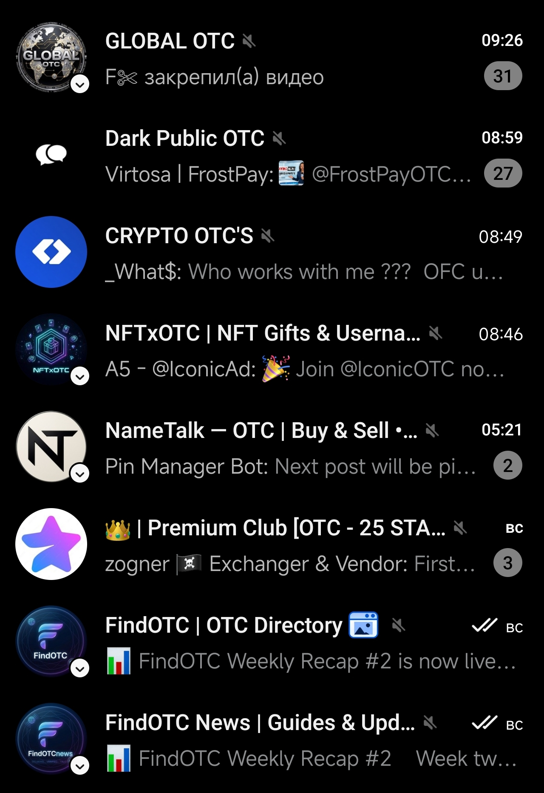

Discover Telegram communities for NFTs, Gifts, Usernames, P2P, TON and more.
Open FindOTCFindOTC is a directory built to make Telegram OTC communities easier to discover. From NFTs and Telegram Gifts to usernames, P2P trading and TON — FindOTC brings communities together in one place.
Community is included in the FindOTC directory.
Community ownership has been confirmed and the community has completed FindOTC verification.
Verified communities have confirmed ownership and receive a visible FindOTC verification status. This helps users identify the official community listed in the directory and distinguish it from copies or fake communities.
Verified Telegram OTC communities can be discovered together in one convenient Telegram folder.
Open Verified Folder